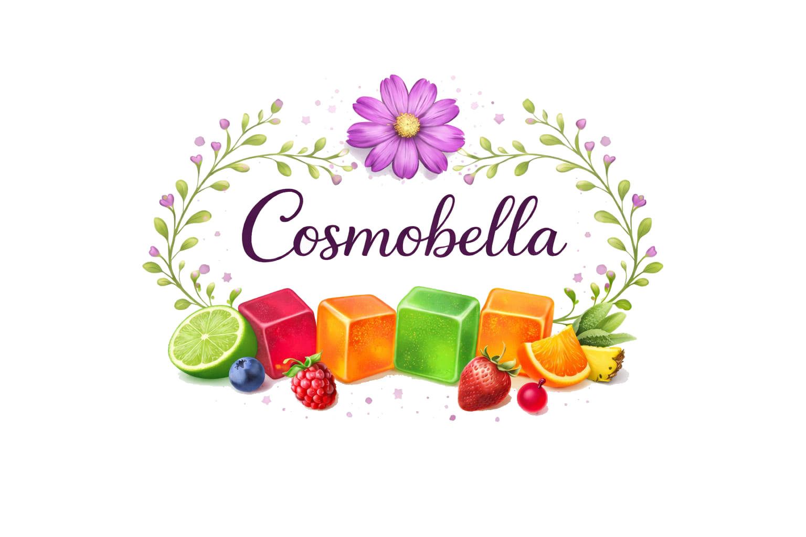

Cosmobella
Naturaleza, ciencia y compromiso en cada detalle
Cosmobella nace con la intención de transformar un recurso natural en una alternativa práctica de bienestar.

Nuestra historia
Cosmobella surge como una iniciativa enfocada en aprovechar el potencial de la flor Cosmos bipinnatus, una planta de origen mexicano poco explorada en la industria alimentaria.
A partir de la investigación de sus propiedades, desarrollamos una presentación innovadora y accesible: gomitas fáciles de integrar en la rutina diaria.
Nuestro objetivo es ofrecer una alternativa práctica que combine naturaleza, calidad y bienestar.
Nuestra misión
Desarrollar gomitas de alta calidad que apoyen el bienestar general, utilizando procesos responsables y alineados con estándares de higiene y control.
Buscamos ofrecer un producto accesible, práctico y confiable, integrando sostenibilidad y salud integral.
Nuestra visión
Aspiramos a posicionarnos como una marca referente en la industria de gomitas de bienestar, destacando por la innovación en el uso de la flor Cosmos bipinnatus y nuestro compromiso con la calidad.
Queremos inspirar a las personas a cuidar su salud y equilibrio de manera consciente y responsable.
Nuestro compromiso con la calidad
Cada etapa del proceso, desde la selección de la materia prima hasta el empaquetado final, se realiza bajo lineamientos de higiene y control alineados con normativas oficiales.
La transparencia y la mejora continua forman parte esencial de nuestra identidad.
Sostenibilidad y responsabilidad
Promovemos el aprovechamiento responsable de la flor Cosmos bipinnatus, fomentando una cadena de suministro local y reduciendo la dependencia de insumos importados.
Creemos en una propuesta que combine bienestar personal con conciencia ambiental.

Nuestra comunidad
Síguenos y forma parte de la comunidad Cosmobella

.png)

En Cosmobella creemos que el bienestar comienza con decisiones pequeñas y constantes.
Cada gomita representa un paso hacia un equilibrio más consciente, combinando naturaleza, ciencia y compromiso.
